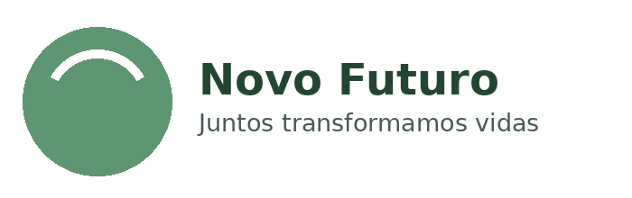
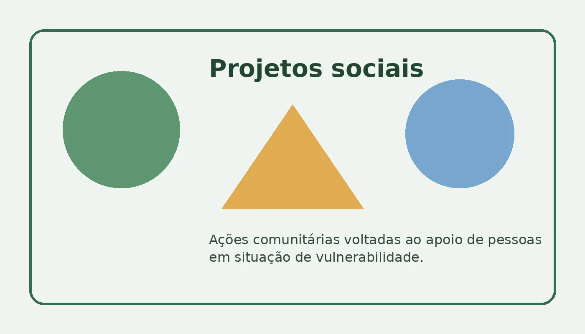
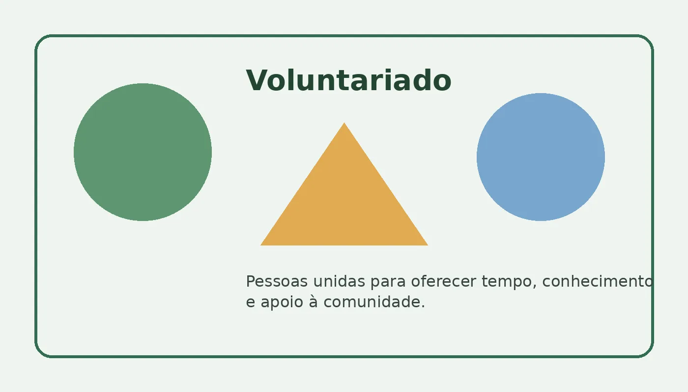

Contribuição financeira
As doações ajudam a manter projetos, materiais e ações comunitárias.
- Doação única;
- Doação mensal;
- Doação de materiais.

Conheça as iniciativas da ONG e escolha a melhor forma de participar.
As doações ajudam a manter projetos, materiais e ações comunitárias.

Realizamos ações de apoio, inclusão e desenvolvimento para a comunidade.
